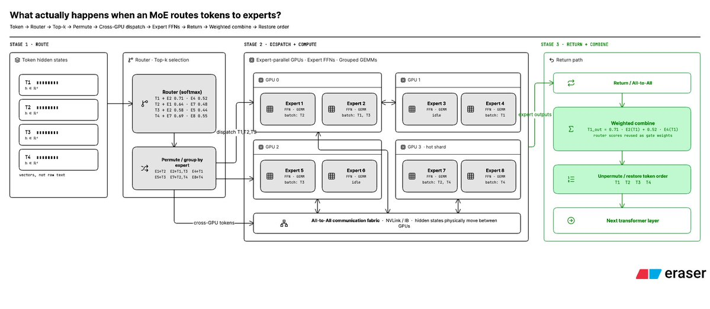

面试被问『MoE怎么加快推理』时,标准答案常是稀疏激活：但很少有人把『一个token被路由到expert时到底发生什么』讲到原子级。这条X长推正好补上:从向量打分、permute分组、跨卡all-to-all,到grouped GEMM、结果归还与加权合并,8步拆得明明白白。
本条为 @navaneethvb的 ~690词长文+1图的全文中译;编译保留了Top-2打分、按专家分组与GPU=专家 等全部示意表,配图为原文自带的架构图(转PNG)。
当密集模型推理,每个token都过一次巨大的FFN。MoE的做法是多颗小FFN(专家)并存、由router只替这个token挑其中几颗跑,而不动用全部参数量：因此超大规模模型也能只激活一小撮expert参数。若模型64个专家、router是Top-2,则每个token只激活其中2个。
下面把这个过程拆到『原子级』,看第1-8步到底发生什么。
真正被路由的不是token本身,而是transformer早已把它变成了hidden-state向量(粗看像token = [0.18,-0.42,0.07,…])。这批向量到MoE层后,学出来的router会对每个可用专家各自算一个分。设共4个专家,可得到E1:0.03/E2:0.71/E3:0.08/E4:0.52。若走top-2,则E2+E4拿到这个token;这些router分还顺带提供了权重,决定稍后各专家结果的贡献占比。

真实里每个token的专家组合五花八门(如T1=E2,E4 ;T2=E1,E7;T3=E2,E5;T4=E7,E8)。外行说法:不同token语义不同,需要的『懂行』专家也不同(T1可以是『猫』,T3可能就是『氯化钠』)。若逐token串跑,生产负载很糟：于是推理运行时把hidden state重排(permute),把选了同一专家的token归到一组:如E1=[T2];E2=[T1,T3];E4=[T1];E5=[T3];E7=[T2,T4]。这样每个专家就能对被分到的token一起做高效的matmul。
生产里模型可能横跨多卡,每个token就不得不跨集群/GPU传输,变成要操心通信开销的推理问题。通解是专家并行:不同GPU各持不同专家(如GPU0=E1,E2;GPU1=E3,E4;GPU2=E5,E6;GPU3=E7,E8)。于是T1既想用GPU0的E2、又想要GPU2的E5,数据就得走一趟all-to-all式的通信步:token→router→按专家分组→GPU0↔GPU1↔GPU2↔GPU3。
专家通常就是FFN(transformer里昂贵的MLP那块),现在每颗GPU在自己持有的专家上跑路由给它的那批token。因为不同token撞向不同专家,运行时往往把这些变成grouped GEMM,而不是一颗颗token各自启动matmul。算完还得『物归原主』:结果被按专家分组、可能落在完全不同的GPU上,于是运行时把输出送回并按当初的permute反转排列(E2对T1的输出→还给T1,E4对T1→还给T1,E7对T2→还给T2)。
还记得开头的router分吗?若T1选中E2:0.71、E4:0.52,它们的输出就按这两个路由值加权、合并成单个hidden state。于是transformer得以当作这整套巨型路由从未发生过继续向下走：而每次token再遇到一个MoE层,这一切又会再来一遍。
这条长帖把『token进了MoE层』还原成八步流水线：向量打分、按专家分组(permute)、必要时的跨卡all-to-all、grouped GEMM、结果逆排列送还、按router权重合成：绝大多数『把MoE讲得玄乎』的地方,本质就是这么一套显式搬移与加权。背后唯一的新机制假设是router与各项权重都已学出来,剩下的全是工程如何让搬移与并行不出错、不慢下来的事。
此为 @navaneethvb的X长推(约690英文词)全文中译,含作者的数值伪示意(Top-2打分、permute/GPU分配表)与1张配图和图注;原作者为社区科普作者而非厂商文档,数据为其教学性示意值而非实测基准。
参考：https://x.com/navaneethvb/status/2094708652724883845